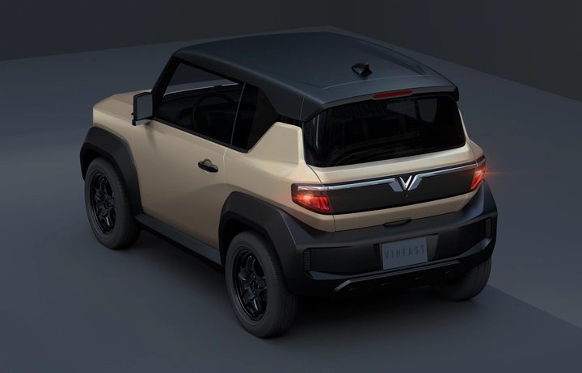
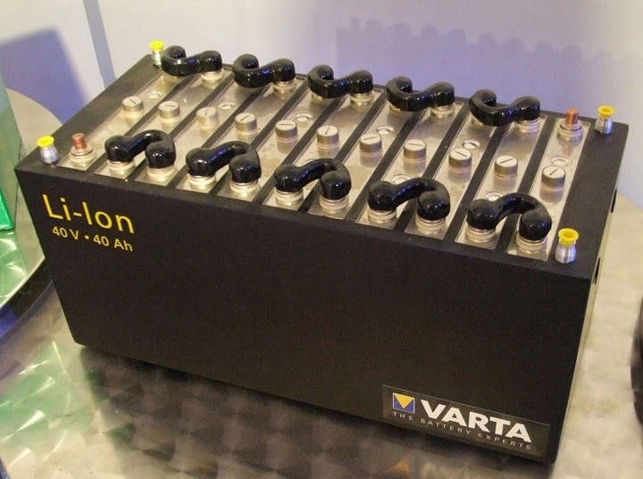
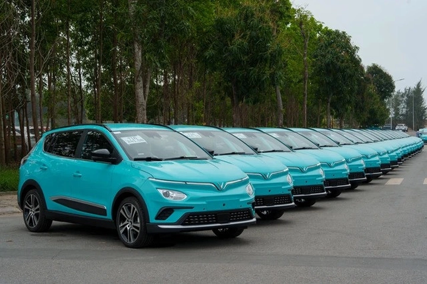

Công nghệ pin và năng lượng tái tạo thế hệ mới
Trong bối cảnh biến đổi khí hậu và nhu cầu năng lượng ngày càng tăng, công nghệ pin và năng lượng tái tạo thế hệ mới trở thành giải pháp quan trọng để cung cấp năng lượng sạch, giảm phát thải carbon và thúc đẩy nền kinh tế xanh.
Những tiến bộ trong công nghệ pin giúp lưu trữ năng lượng hiệu quả hơn, trong khi các nguồn năng lượng tái tạo như mặt trời và gió ngày càng phổ biến và ổn định. Việc kết hợp hai yếu tố này đang mở ra một kỷ nguyên năng lượng mới, bền vững và thân thiện với môi trường.
Hôm nay hãy cùng TrithucWorld tìm hiểu về công nghệ pin và năng lượng tái tạo thế hệ mới thông qua bài viết dưới đây.
1. Giới thiệu công nghệ pin và năng lượng tái tạo thế hệ mới
Công nghệ pin thế hệ mới không chỉ đơn thuần là một phương tiện lưu trữ năng lượng, mà còn mang đến khả năng tối ưu hóa hiệu suất sử dụng và quản lý năng lượng thông minh. Nhờ các tiến bộ trong vật liệu và thiết kế, pin mới có thể dung nạp nhiều năng lượng hơn, sạc nhanh hơn và kéo dài tuổi thọ, đáp ứng nhu cầu ngày càng cao của các thiết bị điện tử, xe điện và hệ thống lưu trữ năng lượng lớn.
Khi kết hợp với năng lượng tái tạo như mặt trời, gió, thủy điện, công nghệ pin thế hệ mới trở thành công cụ then chốt để giảm sự phụ thuộc vào nhiên liệu hóa thạch và hạn chế phát thải khí nhà kính. Điều này giúp các hộ gia đình, doanh nghiệp và cả lưới điện quốc gia tận dụng tối đa nguồn năng lượng sạch, ổn định nguồn cung và giảm lãng phí năng lượng.
Hệ thống năng lượng hiện đại nhờ pin thế hệ mới không chỉ đảm bảo cung cấp điện liên tục mà còn hỗ trợ xây dựng lưới điện thông minh, nơi dữ liệu tiêu thụ và sản xuất năng lượng được quản lý hiệu quả. Nhờ đó, việc phân phối điện năng trở nên chính xác, đáp ứng nhu cầu theo thời gian thực và tối ưu hóa hiệu quả sử dụng năng lượng toàn hệ thống.
Đặc biệt, công nghệ pin và năng lượng tái tạo thế hệ mới tạo tiền đề cho phát triển các thành phố xanh, các khu đô thị thông minh và giao thông sạch, nơi xe điện và cơ sở hạ tầng xanh hoạt động đồng bộ. Khi các phương tiện giao thông điện và hệ thống điện tái tạo được tích hợp, lượng khí thải carbon giảm mạnh, đồng thời chất lượng cuộc sống được nâng cao và nền kinh tế năng lượng bền vững trở thành hiện thực.
Nhìn chung, sự kết hợp giữa pin thế hệ mới và năng lượng tái tạo không chỉ là bước tiến về công nghệ, mà còn là giải pháp chiến lược để hướng tới tương lai năng lượng sạch, bền vững và thông minh. Đây là nền tảng để các quốc gia, doanh nghiệp và người dân thích nghi với nhu cầu năng lượng ngày càng cao và môi trường biến đổi, đồng thời xây dựng một tương lai xanh hơn cho thế hệ mai sau.
2. Lịch sử và sự phát triển của pin hiện đại
Lịch sử phát triển pin bắt đầu từ những loại pin cơ bản như axit-chì và nickel-cadmium, được sử dụng rộng rãi từ thế kỷ 19 và đầu thế kỷ 20. Mặc dù những loại pin này cung cấp năng lượng cho nhiều ứng dụng, nhưng dung lượng thấp, tuổi thọ ngắn và hiệu suất kém đã hạn chế khả năng ứng dụng trong các thiết bị lớn hoặc yêu cầu năng lượng cao.
Bước ngoặt quan trọng xuất hiện khi pin lithium-ion ra đời, mang lại mật độ năng lượng cao, trọng lượng nhẹ và khả năng sạc nhiều lần mà không giảm hiệu suất. Pin lithium-ion nhanh chóng trở thành tiêu chuẩn trong các thiết bị điện tử, điện thoại, laptop và sau đó là xe điện, mở ra kỷ nguyên mới cho năng lượng di động.

Trong những năm gần đây, sự phát triển của pin thế hệ mới như pin thể rắn, pin lithium-sulfur hay pin graphene đang tăng tốc đổi mới công nghệ, giúp cải thiện độ bền, hiệu suất, tốc độ sạc và độ an toàn. Những bước tiến này không chỉ phục vụ các ứng dụng công nghiệp và giao thông mà còn mở ra khả năng lưu trữ năng lượng tái tạo quy mô lớn, hướng tới hệ thống năng lượng bền vững cho tương lai.
Hiện nay trong dòng xe điện của hãng Vinfast (Phạm Nhật Vương) thì 90% đang được sử dụng pin lithium.
3. Các loại pin thế hệ mới
Pin thế hệ mới bao gồm nhiều loại, mỗi loại có ưu điểm riêng và ứng dụng tiềm năng. Pin lithium-sulfur nổi bật với mật độ năng lượng cao, trọng lượng nhẹ và khả năng lưu trữ điện lâu dài, lý tưởng cho các thiết bị di động và hệ thống lưu trữ năng lượng tái tạo.
Pin thể rắn sử dụng chất điện phân rắn thay vì lỏng, giúp tăng độ an toàn, tuổi thọ cao hơn và giảm nguy cơ cháy nổ. Loại pin này đặc biệt phù hợp cho xe điện và các ứng dụng công nghiệp đòi hỏi tính ổn định và an toàn tuyệt đối.
Ngoài ra, pin graphene nổi bật với khả năng sạc nhanh, tuổi thọ dài và mật độ năng lượng vượt trội, mở ra tiềm năng ứng dụng trong xe điện, thiết bị công nghiệp và năng lượng tái tạo quy mô lớn. Sự đa dạng này cho phép các nhà sản xuất lựa chọn giải pháp phù hợp với từng nhu cầu, từ thiết bị cá nhân, xe điện đến hệ thống lưu trữ năng lượng cho thành phố thông minh.
4. Công nghệ lưu trữ năng lượng tái tạo
Lưu trữ năng lượng là yếu tố quyết định để tối ưu hóa năng lượng tái tạo, bởi nguồn năng lượng mặt trời và gió thường không ổn định. Pin thế hệ mới giúp dự trữ điện vào những thời điểm dư thừa và cung cấp khi thiếu, đảm bảo điện năng được sử dụng liên tục và hiệu quả.
Nhờ các giải pháp lưu trữ thông minh, năng lượng tái tạo có thể ổn định lưới điện quốc gia, giảm phụ thuộc vào các nguồn điện truyền thống và tăng tính linh hoạt của hệ thống. Điều này đặc biệt quan trọng trong các thành phố lớn và khu công nghiệp, nơi nhu cầu điện thay đổi liên tục và yêu cầu nguồn cung ổn định, bền vững.
Hệ thống lưu trữ năng lượng còn hỗ trợ cân bằng cung cầu, tối ưu hóa chi phí điện và tăng khả năng sử dụng điện tái tạo, từ đó giảm thiểu lãng phí và tác động môi trường. Khi kết hợp với pin thế hệ mới, các giải pháp này mở ra một tương lai năng lượng thông minh, sạch và bền vững, đáp ứng nhu cầu phát triển kinh tế mà vẫn bảo vệ môi trường.
5. Pin thể rắn – bước tiến đột phá
Pin thể rắn là bước tiến quan trọng trong công nghệ lưu trữ năng lượng, thay thế chất điện phân lỏng bằng chất rắn, giúp giảm nguy cơ cháy nổ và tăng độ an toàn. Không chỉ an toàn hơn, pin thể rắn còn tăng mật độ năng lượng, cải thiện tuổi thọ và hiệu suất sạc, đáp ứng nhu cầu ngày càng cao của xe điện, thiết bị di động và hệ thống công nghiệp.
Công nghệ này còn giúp thu nhỏ kích thước pin, giảm trọng lượng tổng thể và mở rộng khả năng tích hợp vào các thiết bị và phương tiện mà pin truyền thống khó thực hiện. Nhờ khả năng hoạt động ổn định trong nhiều điều kiện khắc nghiệt, pin thể rắn đang trở thành lựa chọn ưu tiên cho các ứng dụng công nghiệp và giao thông xanh.

Ngoài ra, pin thể rắn còn mở ra cơ hội nâng cao hiệu quả lưu trữ năng lượng tái tạo, giúp kết hợp năng lượng mặt trời, gió và thủy điện một cách tối ưu. Điều này không chỉ nâng cao hiệu quả sử dụng năng lượng mà còn đóng góp vào phát triển bền vững, xây dựng nền tảng cho một tương lai năng lượng sạch và an toàn cho toàn cầu.
6. Pin graphene – tương lai của năng lượng siêu nhanh
Pin graphene được đánh giá là một trong những công nghệ pin tiên tiến nhất hiện nay, nổi bật với khả năng sạc cực nhanh, tuổi thọ cao và mật độ năng lượng vượt trội. Công nghệ này cho phép pin lưu trữ nhiều điện năng hơn trong cùng một kích thước, giảm trọng lượng thiết bị và tăng hiệu quả sử dụng.
Khả năng sạc nhanh chỉ trong vài phút khiến graphene trở thành giải pháp lý tưởng cho xe điện, thiết bị di động và ứng dụng công nghiệp cần năng lượng liên tục. Bên cạnh đó, tính ổn định và tuổi thọ dài của pin graphene giúp giảm chi phí thay thế và bảo trì, mở rộng tiềm năng triển khai trên quy mô lớn.
Pin graphene còn góp phần nâng cao hiệu quả lưu trữ năng lượng tái tạo, khi kết hợp với năng lượng mặt trời và gió, giúp cung cấp điện liên tục ngay cả khi nguồn gió hoặc mặt trời không ổn định. Nhờ vậy, pin graphene được xem là cánh cửa mở ra kỷ nguyên năng lượng thông minh, sạch và bền vững cho tương lai.
7. Ứng dụng trong xe điện và phương tiện giao thông xanh
Công nghệ pin thế hệ mới đang thay đổi cách chúng ta di chuyển, đặc biệt trong lĩnh vực xe điện và phương tiện giao thông xanh. Pin lưu trữ hiệu quả hơn, trọng lượng nhẹ hơn và sạc nhanh hơn, giúp xe điện tăng quãng đường đi, rút ngắn thời gian sạc và giảm chi phí vận hành.
Nhờ những tiến bộ này, các phương tiện giao thông xanh trở nên thực tế và phổ biến hơn, từ xe máy điện, ô tô điện đến xe bus và phương tiện công cộng. Đồng thời, việc giảm phát thải khí nhà kính từ giao thông góp phần giảm ô nhiễm môi trường và cải thiện chất lượng không khí, hướng tới các thành phố bền vững.

Ngoài ra, pin thế hệ mới còn giúp tích hợp xe điện với hệ thống năng lượng tái tạo, cho phép sạc từ điện mặt trời hoặc gió, nâng cao hiệu quả sử dụng năng lượng và giảm phụ thuộc vào lưới điện truyền thống. Đây là bước tiến quan trọng để xây dựng giao thông thông minh và xanh trên quy mô toàn cầu.
8. Ứng dụng trong năng lượng tái tạo và lưới điện thông minh
Pin thế hệ mới đóng vai trò trung tâm trong việc lưu trữ và quản lý năng lượng tái tạo, giúp cân bằng nguồn cung khi mặt trời hoặc gió không ổn định. Hệ thống pin tích hợp vào lưới điện thông minh cho phép dự trữ, phân phối và tối ưu hóa điện năng theo nhu cầu thực tế, nâng cao tính ổn định của mạng lưới.
Điều này đặc biệt quan trọng trong các thành phố lớn, khu công nghiệp hoặc các vùng xa, nơi nguồn cung năng lượng biến động cao và nhu cầu tiêu thụ điện liên tục. Các hệ thống pin còn hỗ trợ quản lý dữ liệu năng lượng theo thời gian thực, giúp dự báo nhu cầu, phòng tránh quá tải và giảm lãng phí điện năng.
Nhờ vậy, pin thế hệ mới không chỉ lưu trữ năng lượng mà còn tạo nền tảng cho lưới điện thông minh, năng lượng bền vững và hiệu quả, góp phần xây dựng các thành phố xanh, tiết kiệm năng lượng và thân thiện môi trường.
9. Thách thức và hạn chế của pin và năng lượng tái tạo thế hệ mới
Mặc dù pin và năng lượng tái tạo thế hệ mới mang lại nhiều lợi ích, nhưng vẫn tồn tại những thách thức cần giải quyết. Chi phí sản xuất pin thế hệ mới, đặc biệt là pin thể rắn và graphene, vẫn còn cao, hạn chế khả năng triển khai rộng rãi.
Một số vật liệu cần thiết cho pin, như lithium, cobalt hoặc graphene, khó khai thác và tái chế, tạo áp lực về môi trường nếu không quản lý tốt. Đồng thời, việc tích hợp pin vào lưới điện hiện có và hệ thống năng lượng tái tạo lớn cũng đòi hỏi hạ tầng mạnh, kế hoạch đầu tư bài bản và đào tạo nhân lực chuyên môn.
Ngoài ra, việc bảo trì, quản lý tuổi thọ pin và đảm bảo an toàn trong quá trình vận hành cũng là vấn đề quan trọng. Tuy nhiên, với nghiên cứu và đầu tư công nghệ không ngừng, các thách thức này đang được dần khắc phục, mở đường cho tương lai năng lượng bền vững.
10. Tương lai của công nghệ pin và năng lượng tái tạo
Trong tương lai, pin và năng lượng tái tạo thế hệ mới sẽ phát triển mạnh mẽ, tuổi thọ cao hơn, khả năng lưu trữ lớn hơn và chi phí sản xuất giảm. Công nghệ này sẽ giúp tích hợp hoàn hảo các nguồn năng lượng sạch, ổn định lưới điện và hỗ trợ hệ thống giao thông xanh.
Sự phát triển này còn mở ra cơ hội cho các thành phố thông minh, hệ thống năng lượng tái tạo quy mô lớn và các ứng dụng công nghiệp tiên tiến. Khi công nghệ pin tiếp tục tiến bộ, năng lượng tái tạo sẽ trở nên ổn định, đáng tin cậy và có thể thay thế dần nhiên liệu hóa thạch, hướng tới nền kinh tế xanh, bền vững và thân thiện môi trường.
Nhờ những bước tiến này, công nghệ pin và năng lượng tái tạo thế hệ mới không chỉ là bước tiến về kỹ thuật, mà còn là giải pháp chiến lược để bảo vệ môi trường, nâng cao chất lượng sống và đảm bảo nguồn năng lượng cho thế hệ tương lai.